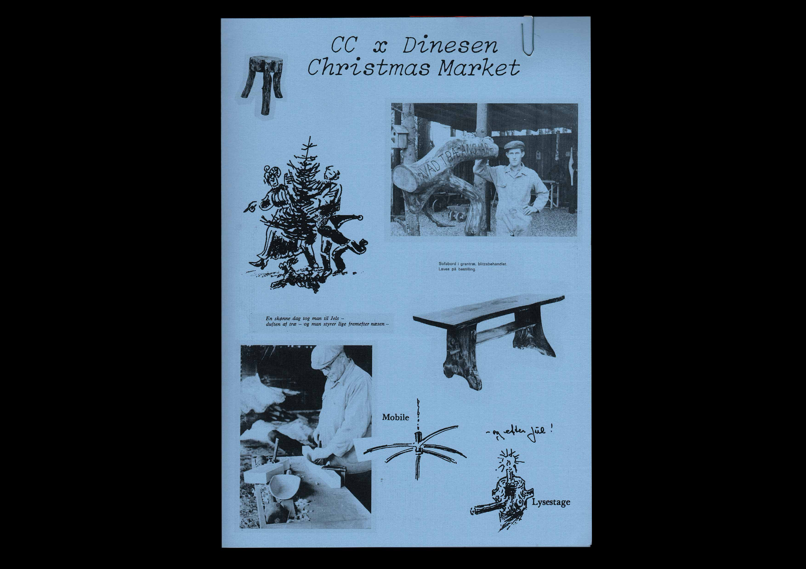
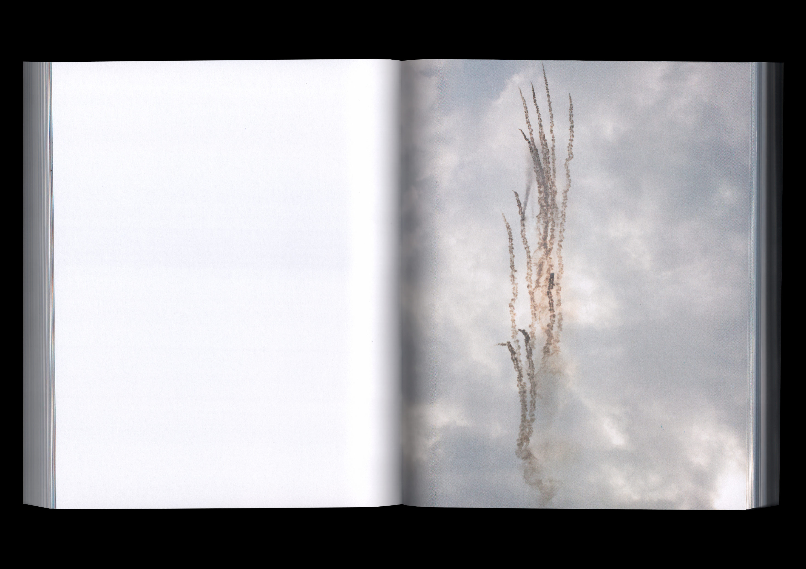
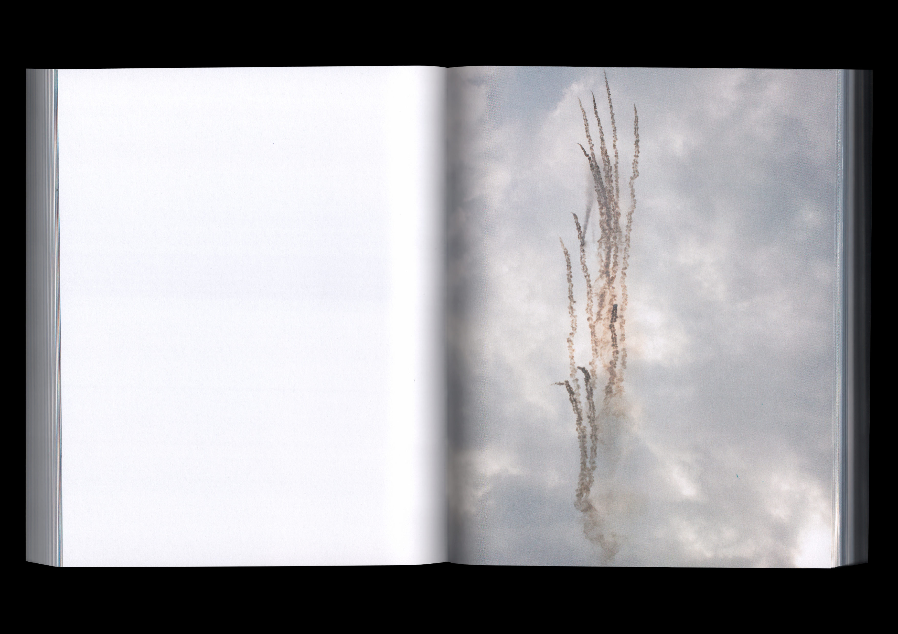
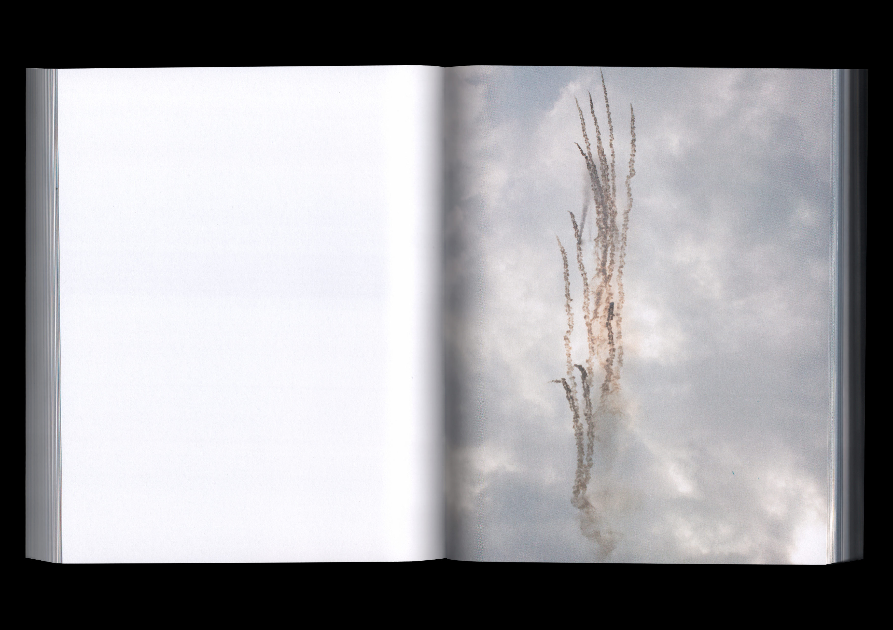

Clarice Lispector: At skrive og leve. Selected "crônicas" first published in the newspaper Jornal do Brasil between 1967–1973. Designed in collaboration with Orin Bristow. Translated by Tine Lykke Prado and Kristina Nya Glaffey. Edited by Astrid Willow Møldrup. Published by Basilisk. 2023

CC x DINESEN: Graphic identity and various printed matter for the shop and exhibition of Dinesen at Copenhagen Contemporary. 2023



Paula Duvå: Killer Machine (the sublime sky, clouds, camouflage smoke disrupting heat seeking missiles, fighter planes removed). Published by Disko Bay. 2023
Posters and handout for the exhibition A wish by artist Tringa Gashi. Texts by Andita Shabanaj and Tringa Gashi. Each poster featured a glossy photographic print from the artist’s archive. 2023
Titles for the film LAND SERVER SIGNAL by artist Nellie Lindquist. Typeface by Paul Bernhard. 2023
Andrzej Tichý: Elendigheden. Translated by Frederik Tøt Godsk. Published by Basilisk. 2022
Poster for a performance by artist Skjold Rambow. 2022
The Jerome Bruner Library: From New York to Nijmegen. Published by the Max Planck Institute for Psycholinguistics to commemorate the American psycholinguist Jerome Bruner, and to inaugurate the donation of his personal library to the institute. Texts by Willem J.M. Levelt, Karin Kastens and Eleanor M. Fox. Display typeface by Orange Slice Type. 2020
Drawings and labels for Rodløs Cider. 2019–2022
© Mark Emil Poulsen and the authors, 2024


 
